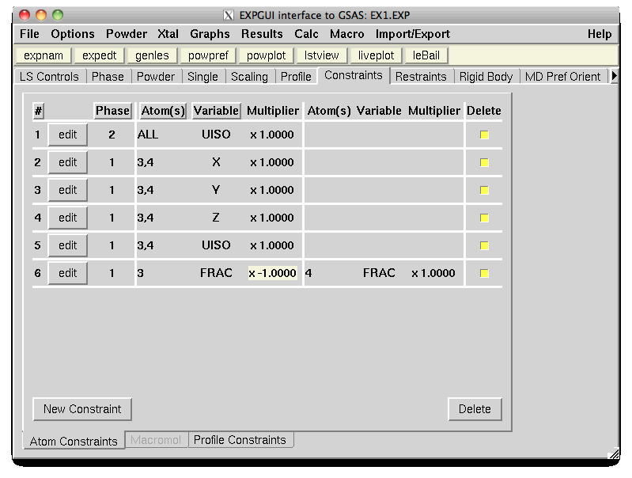
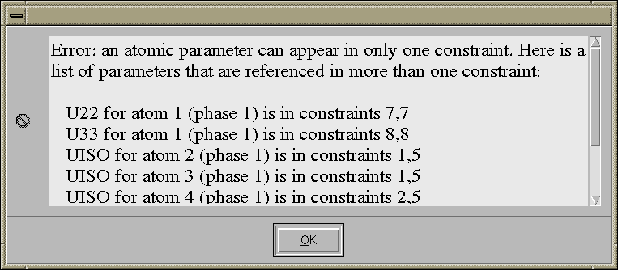
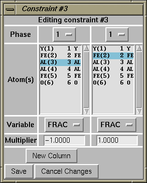
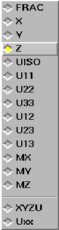
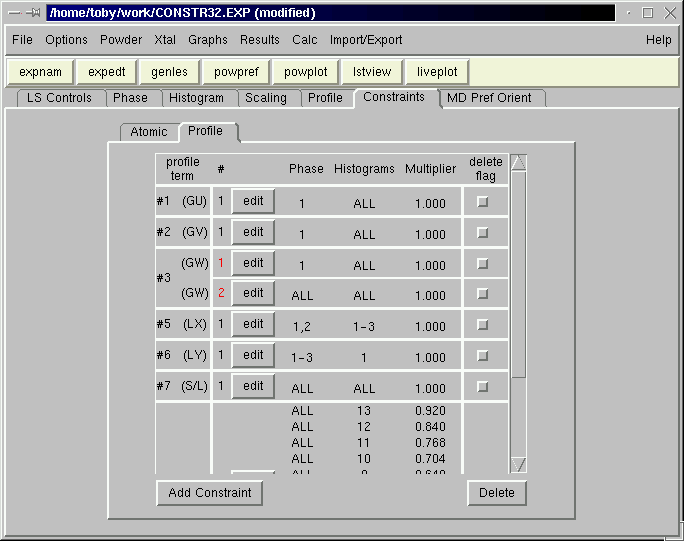
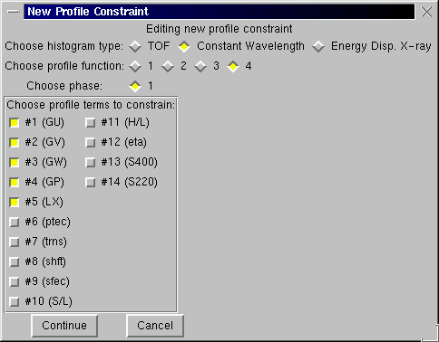
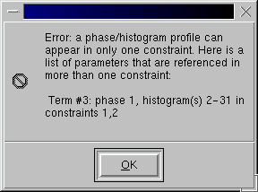
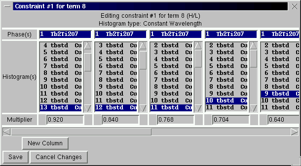
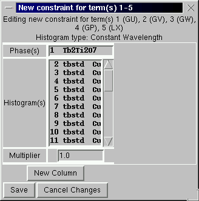

EXPGUI top Next page Previous page
EXPGUI, part 6
A.6 Constraints panel
GSAS offers two ways to limit changes to parameters that are based rules created by a crystallographer to create what is felt to be the most reasonable model. So called "soft constraints", which are better described as "restraints" penalize the fit if aspects of a model (for example, bond lengths) differ from selected values. They are now located on the on the Restraints panel. Actual constraints, which are sometimes called "hard constraints", are on panel described here. They reduce the actual number of parameters in a model, by grouping parameters so that a single shift (possibly scaled) is applied to each parameter in the group. At this time the only constraints that can be set in EXPGUI are on Atom Constraints for normal phases, Macromolecular Atom Constraints when a macromolecular phase is present, or Peak Profile Constraints. GSAS offers many other types of restraints, but these must be accessed in EXPEDT.
Note that in GSAS these constraints are only applied to shifts, but not to the actual values. This means that, for example, if two atoms are constrained so that the shift on their occupancy is the same, but the initial occupancies differ, the difference in their occupancies will not change as the values are refined.
Due to the way GSAS implements constraints, a parameter can be included in only one constraint. Should one or more parameters be constrained twice, the refinement results are unpredictable, so EXPGUI will not allow this (EXPEDT will). One can sometimes bypass this problem by defining redundant parameters. For example to constrain the occupancy of site A to B and site A to C, one can create two atom A sites: A1 & A2. Then one can create two constraints, for site A1 to B and site A2 to C. The actual occupancy of site A is then that of A1 plus A2
A.6.1 Atom Constraints

The atom constraints editing panel appears below. Note that constraints can be listed sorted by constraint number, phase number, lowest atom number or variable by clicking on the buttons at the top of the panel.
To delete one or more constraints, click on the appropriate checkbuttons in the Delete column and the press the Delete button, below.

Should parameters be included in more than one constraint, an error message is displayed, as shown below. Note that the constraint number is displayed as red on the main atomic constraints window (see above), if the constraint contains a parameter referenced elsewhere. Negative contraint values are highlighted with a beige background to make them more visible.
  When the edit button for a constraint is pressed, the constraint is opened for editing. Controls are available to select the phase, variable, multiplier and atom(s). Note that for atom selection, use of the control key and the left mouse button allow individual atoms to be selected or deselected. Shift and the left mouse button allow ranges of atoms to be selected and the right mouse button selects all atoms (see Mouse Actions).
Note that it is inappropriate to constrain different types of parameters together, for example X and Uiso. The left-most variable button is the "master" which determines what variable are allowed in the other variable buttons.
When the "New Constraint" button is pressed, a blank constraint editing window is opened. Note that any variable to the right may then be selected, including three special codes, Uxx, XYZU and XYZU+-F.
These special codes are valuable for atoms that share a site or are otherwise grouped together.
- XYZU creates four constraints, requiring the shifts on x, y, z and Uiso to be the same for all the selected atoms.
- Uxx does the same for the six anisotropic displacement parameters.
- XYZU+-F is used for pairs of atoms where the shifts on x, y, z and Uiso are required to be equal, but the shifts on Frac are opposite.
Note that only 100 parameters may be included in a single atomic constraint, with one exception. When shifts for Uiso are constrained to the same value for all atoms in a phase, this counts as a single parameter. If more than 500 parameters are entered for a constraint, an error message is shown. Up to 2000 total atomic constraints may be entered. EXPGUI does not warn if you exceed this limit.
A.6.2 Macromolecular Constraints
Constraints for a macromolecular phase can be entered on a panel similar to the Atomic Constraints, except that the phase number does not appear anywhere (since the macromolecular phase must be phase #1). The variables that can be constrained for a macromolecular phase are the coordinates, x, y, & z as well as the occupancy, FRA and the atomic displacement parameter, UIS. The special constraint, XYZU, is used to constrain all coordinates and the displacement parameter.
A.6.3 Profile Constraints

The profile constraints editing panel appears below. Profile constraints are used to relate the shifts applied to profile terms for different phase/histogram combinations. Profile terms are identified by number, so while EXPEDT allows one to constrain the first profile term for a TOF histogram to a the first term in a CW histogram, EXPGUI attempts to make this impossible.
To delete one or more constraints, click on the appropriate checkbuttons in the Delete column and the press the Delete button, below.
 When the "New Constraint" button is pressed, a window is opened to select the histogram and profile function type to be constrained. Note that only for profile function #4, where the number of terms depends on the phase symmetry, does it matter what phase you select. The available profile terms are displayed on the bottom of the window and more than one can be selected.
 Should parameters be included in more than one constraint, an error message is displayed, as shown below. Note that the constraint number is displayed as red on the main profile constraints window (see above), if the constraint contains a parameter referenced elsewhere.
When the edit button for a constraint is pressed, the constraint is opened for editing, as shown below. Listboxes contain the available phases and histograms. Only the histograms of the same data type (TOF, CW or ED) are included, but no check is made to ensure that the selected phase/histogram combinations all have the same profile type. Note that for phase and histogram selection, use of the control key and the left mouse button allow individual items to be selected or deselected. Shift and the left mouse button allow ranges of items to be selected and the right mouse button selects all phases or histograms. (see Mouse Actions).

 After the "Continue" button is pressed, a constraint edit window is opened, as shown to the left. Listboxes contain the available phases and histograms and only the histograms of the selected data type are included, as before. Also, for phase and histogram selection, use of the control or shift key and the left mouse button allow individual items to be selected or deselected and the right mouse button selects all phases or histograms. Note that if more than one profile term was selected on the previous window, the same set of constraints are for each term.
Note that only 27 terms can be included in a single profile constraint. Also, only like profile terms can be constrained. While GSAS does allow different types of profile terms to be constrained together, this does not usually make sense and EXPGUI does not allow it.
EXPGUI top Next page Previous page